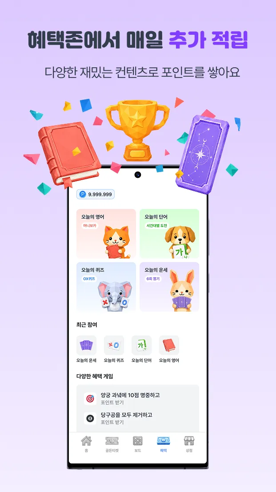
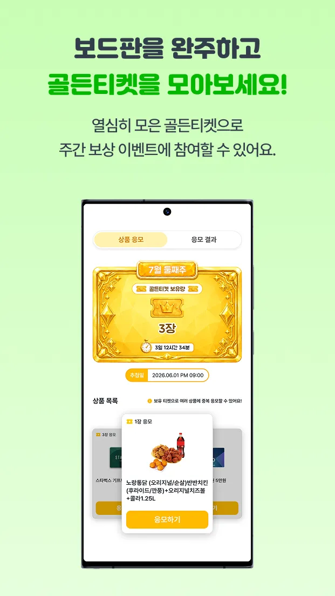
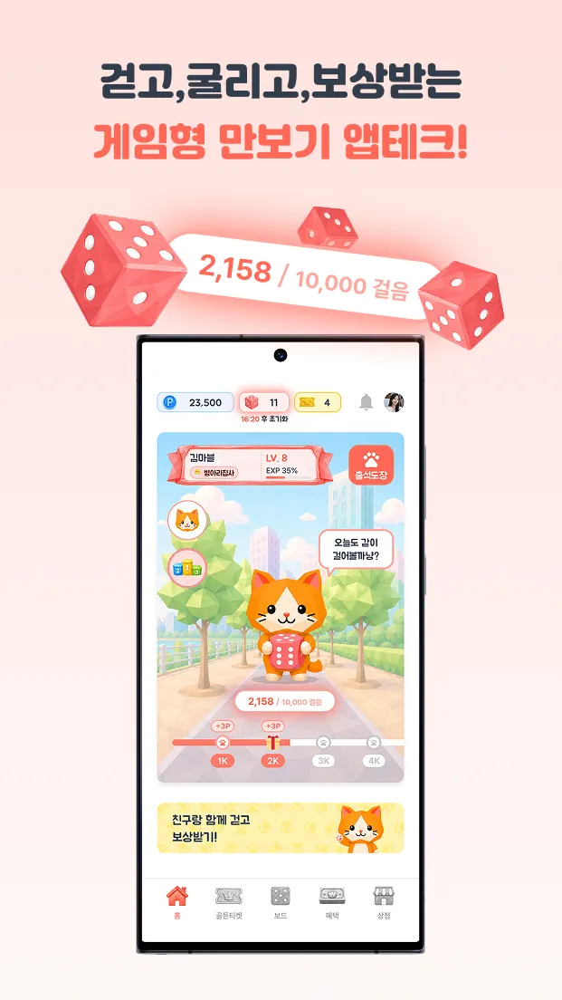
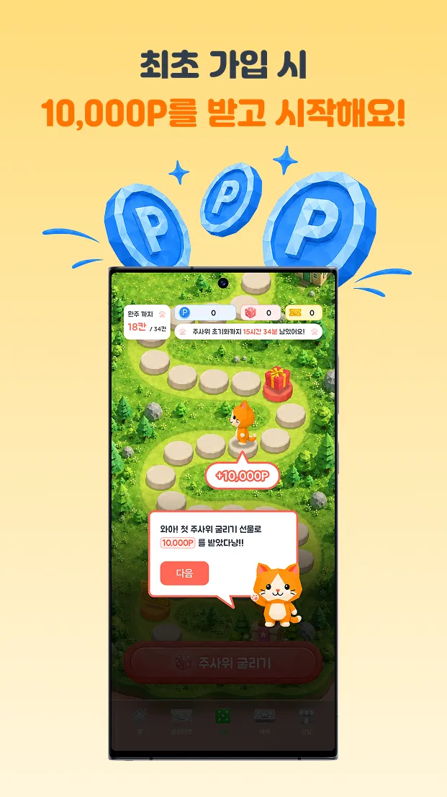
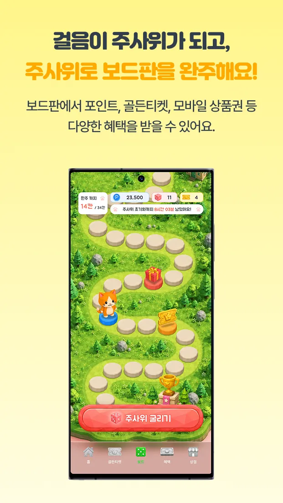

마블워크
걷기 보상 앱 · Google Play · App Store · 원스토어
걸음 수로 주사위를 얻어 보드를 도는 리워드 앱입니다. 기획부터 8월 세 스토어 출시, 이후 운영까지 PM으로 이끌고 있습니다. 앱, 어드민, 서버, 인프라 네 층을 설계하고 출시 시점 커밋 대부분을 직접 작성했습니다. 어드민 70화면 중 42화면은 목업부터 제가 그려 구현했고, 운영자는 그 어드민에서 7월부터 10월까지 배포 없이 설정을 465번 바꿨습니다.
- NestJS
- TypeORM
- Aurora PostgreSQL
- Valkey
- SQS
- Flutter
- Riverpod
- Next.js
- AWS
- Grafana





스토어에 공개된 화면
어드민 디자인 시스템 · 2026.05 – 07
어드민을 shadcn 기반 자체 프리미티브 위에 다시 세웠습니다.
- spec
- 토큰
- 컴포넌트
- 페이지 IA
22 · 16자체 프리미티브와 도메인 공통 컴포넌트
149개화면이 공유하는 CSS 변수
감사 로그 액션 130종은 한글 사전 하나로 모았습니다. 그 지역화가 깨지지 않게 Playwright 41 spec, 111 케이스가 지킵니다.
홈페이지 · 법률 문서
서비스 홈페이지와 약관도 제가 고치고 배포했습니다.
- 홈페이지Next.js 소스로 이전, CloudFront 무효화까지 잇는 배포 파이프라인
- 약관 · 방침이용약관과 개인정보처리방침 v2.0~v2.2 개정
- 동의 약관동의 항목마다 따로 여는 약관 페이지 5종
- app-ads.txt광고 판매자 인증 파일 게시
설계
적립 경로
같은 거래 ID로 두 번 들어와도 적립은 한 번입니다.
- 서명 확인ECDSA · HMAC
- 멱등 처리거래 ID · UNIQUE
- 행 잠금pessimistic write
- 한도 확인일일 · 월간
- 원장 기록append-only
광고 · 오퍼월 · 기프티콘 교환 어디서 들어오든 같은 검증을 거칩니다. 잔액 하한은 애플리케이션이 아니라 DB 제약이 지킵니다.
CHECK ("reward_points" >= 0)
마블워크 · 포인트를 쿠폰으로 교환
응답을 못 받으면 환불하지 않는 교환
앱
API 서버
DB원장
발행사외부
트랜잭션 · 외부 호출 전에 커밋
응답에 따라
발행됨
분명한 거절
타임아웃 · 응답 유실
발행사에 거래 조회 API가 없어서, 운영자가 실제 발행 여부를 확인해 확정하거나 환불합니다.
- 고치기 전
- 발행 호출이 트랜잭션 안에 있어서 응답만 유실돼도 롤백하고 포인트를 돌려줬습니다. 쿠폰은 이미 나간 뒤였고, 재시도는 새 거래 ID로 나가 중복 발행도 가능했습니다.
- 판단
- 실패를 분명한 거절과 결과를 모르는 경우로 나눴습니다. 결과를 모를 때 자동으로 환불하면 쿠폰과 포인트가 함께 나갈 수 있어서, 그때는 환불하지 않고 멈춰 둡니다.
마블워크 · 상용 배포 파이프라인
마이그레이션은 배포와 떼어 한 번만
승인자
파이프라인
DB
상용 환경AWS
마이그레이션 전용 단계 · 1회
- 고치기 전
- 인스턴스마다 배포 전 훅으로 마이그레이션을 돌려서, 여러 대가 동시에 실행할 위험이 있었습니다.
- 결과
- 7월 첫 상용 승격을 이 절차대로 사고 없이 마쳤습니다.
행동 로그
사용자가 무엇을 했는지 되짚을 수 있게 로그를 설계했습니다.
- 앱GA4 이벤트 100종 넘게
- 서버사용자 ID가 붙은 요청 로그 · 1년 보관
- 도메인 로그원장 · 광고 퍼널 · 팝업 · 보드 세션
- 어드민 회원 상세한 사람의 이력을 탭으로 추적
앱, 서버, 도메인 로그 세 갈래가 어드민 회원 상세의 탭으로 모여, 한 사람의 이력을 그 자리에서 따라갈 수 있습니다.
마블워크 · 자체 어트리뷰션
MMP 없이 유입 추적부터 매체 포스트백까지
광고 매체오퍼월 · 캠페인 링크
API 서버랜딩 · 전환 엔진
스토어 · 앱
매체 서버외부
전환 판정
응답에 따라
2xx
타임아웃 · 5xx
4xx · 403 제외
통보를 받은 매체가 자기 사용자에게 보상을 지급합니다. 위조나 중복이 곧 돈이라, 서명 키는 암호화해 저장하고 목적지와 키는 어드민에서 바로 교체합니다.
- 규모
- 매체 8곳을 연동했습니다. 서버 포스트백 5곳과 앱 SDK 3곳이고, 서버 포스트백 전송률은 약 99%입니다. 매체마다 전송 규격이 달라 일반화하지 않고, 매체 코드로 어댑터를 고르는 구조만 두었습니다.
- 판단
- iOS는 통신사 CGNAT 때문에 여러 사용자가 같은 공인 IP를 써서 IP 지문 매칭의 오귀속이 큽니다. 그래서 지문을 쓰지 않고 Apple 캠페인 링크 총량을 별도 칸으로 보여 주며, Android 확정치와 합치지 않습니다.
- 게이트
- 이미 쓰던 사용자가 광고를 눌러도 전환 단가가 나가는 것을 막으려고, 가입 시각이 그 기기의 최초 유입보다 뒤인지 확인합니다. 판정할 수 없으면 인정하지 않습니다. 광고비가 나가는 판정이라 놓치는 쪽이 안전하다고 봤습니다.
장애 대응
장애 대응 · 마블워크 · 2026.09
광고를 끝까지 봤는데 보상이 들어오지 않던 유실
광고 서버의 시청 검증은 도착했는데 앱의 지급 요청이 나가지 않은 건이 있었습니다. 원인은 두 가지였고, 앱이 끝까지 살아 돌아와야만 보상이 나가는 구조가 공통 뿌리였습니다.
- 증상
광고를 끝까지 봤는데 보상이 들어오지 않았습니다. 광고 서버의 시청 검증(SSV)은 도착했는데 앱의 지급 요청은 한 번도 나가지 않은 상태였습니다.
- 증거
상용에서 16시간 표본을 보니 검증은 왔는데 지급 요청이 없던 시청이 10%였습니다. 하루 유실의 대부분은 광고를 보는 도중 앱 프로세스가 종료된 경우였습니다.
- 원인
광고가 닫히자마자 광고 객체를 폐기해서, 닫힌 뒤 1.5초 안에 늦게 오는 보상 이벤트를 SDK가 버리고 있었습니다. 미디에이션 일부는 닫힘 콜백이 보상 콜백보다 먼저 와서, 닫힘을 받는 즉시 보상 없음으로 결론 내던 경로도 있었습니다. 또 지급이 앱 복귀에만 달려 있어서, 서버는 시청 사실을 알아도 무엇을 줄지 몰랐습니다.
- 조치
광고 폐기를 보상 판정이 끝난 뒤로 옮겼습니다. 광고를 띄우기 직전에 무엇을 위한 광고인지 서버에 남기고, 5분마다 쓰이지 않은 시청 검증을 찾아 앱이 못 한 지급 호출을 그대로 재생합니다.
- 재발 방지
지급 로직을 새로 만들지 않고 같은 호출을 재생해서 일일 한도와 날짜 경계가 그대로 적용되고, 이중 지급은 시청 검증을 원자적으로 한 번만 소비하는 기존 구조가 막습니다. 광고 단계별 결과도 DB에 남겨 다음 유실은 바로 추적합니다.
10%16시간 표본에서 검증은 왔는데 지급 요청이 없던 시청
대부분하루 유실 중 광고 도중 앱이 종료된 경우
오퍼월 콜백 위조 경로 차단
어트리뷰션과 반대 방향으로, 우리 앱에 붙인 오퍼월이 보내는 적립 콜백을 받는 경로입니다. 조작할 수 있는 X-Forwarded-For 헤더 대신, 신뢰한 프록시 설정으로 복원한 접속 IP로 판정하게 바꿨습니다. 주소가 IPv4-mapped IPv6(::ffff:) 형태로 들어와 진짜 콜백까지 거절되고 적립이 0이 되던 문제도 정규화로 고쳤습니다.
상용 푸시 발송 전면 중단
시크릿에 저장된 인증 키의 개행 이스케이프가 어긋나 JSON 파싱이 실패했고, 발송 서비스는 오류만 남긴 채 조용히 꺼져 있었습니다. 저장된 값을 바로잡아 복구했고, 컨테이너에서 키 파싱과 초기화 로그를 확인한 뒤 끝냈습니다. 그 뒤로 시크릿 JSON은 넣은 직후 소비 지점에서 파싱을 검증하는 것을 절차로 남겼습니다.